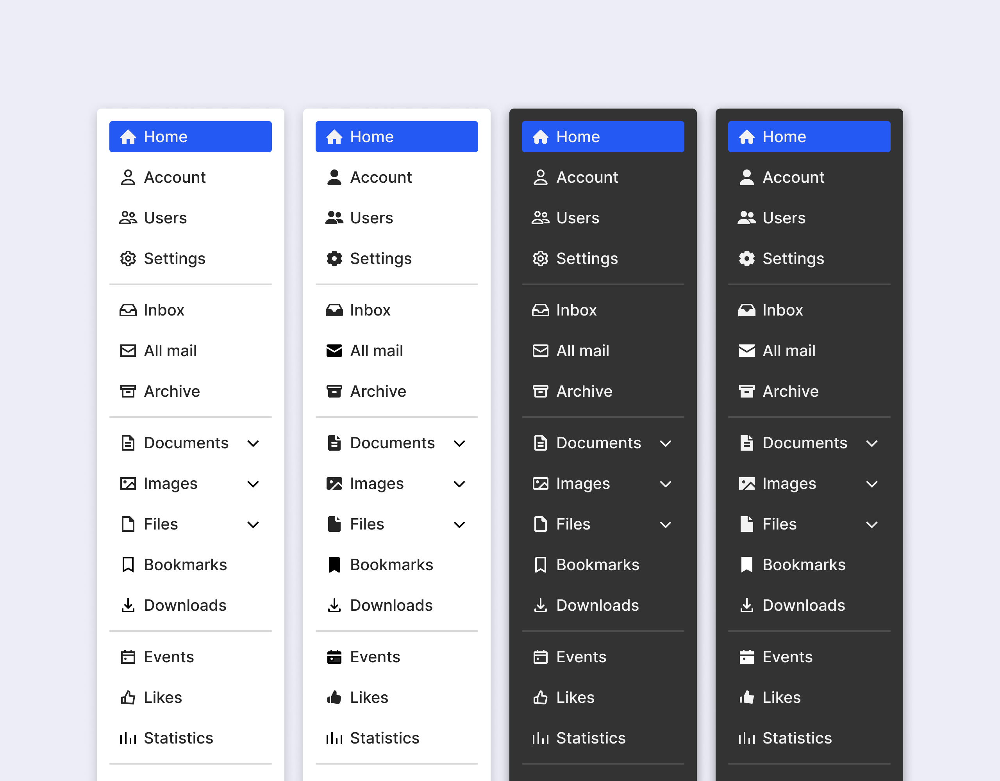

Contribution
I took the initiative to create an icon set for eero Insight and led the effort of establishing iconography guidelines.
Drawbacks
That was the state of icon assets when I joined eero team. The main problem they had was the lack of the ownership and Iconography guidelines.
As a result, icons used in production had many imperfections, like these misalignments.
Several icons across the set didn’t follow consistent patterns.
On top of that, icons were often misused in the product and duplicated, causing customer confusion.
Audit
I started with conducting icon audit across multiple design assets and the eero product itself. I started with conducting icon audit across multiple design assets and the eero product itself. Then, I organized all the icons in a single sheet, making it easier to work with.
System
After that, I worked with the team on design principles we should follow to create our new icon set.
I also established design grids to use for Navigational (24px) and Table (16px) icons.
To make the new icon set consistent, I established several guidelines, like 2px Safe areas.
I also created keylines to follow while creating icons with Circle, Square, Horizontal and Vertical shapes.
Besides that, I defined basic style requirements, like Corner radius, Angle, and Stroke width.
Icon set
Then, I started creating icons according to established principles and guidelines.
Along the way, I was testing how new icons look and feel in the product.
Next steps
After creating the initial set, I plan to work on another category of icons used across eero products–Illustrative, which represent network devices.
Guidelines
I’m also working on the written form of the Iconography guidelines that design team can follow to create new icons.
Open source
The icons project inspired me to start working on an open source icon set which I plan to launch in the Figma community.
It will consist of Regular, Filled, Rounded, and Sharp variations of icons.
Thanks for reading!